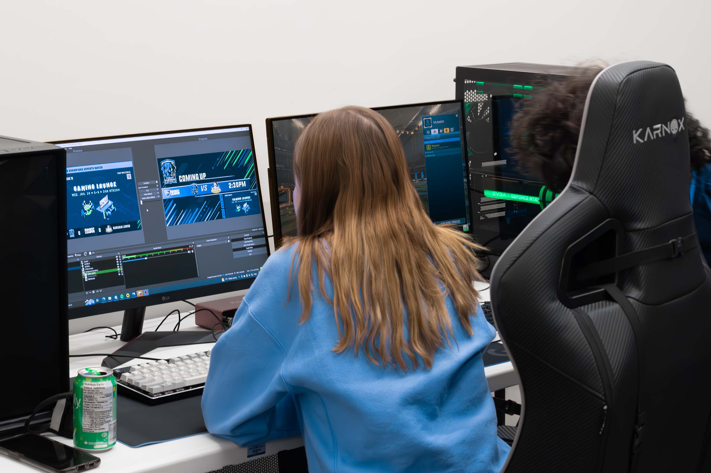
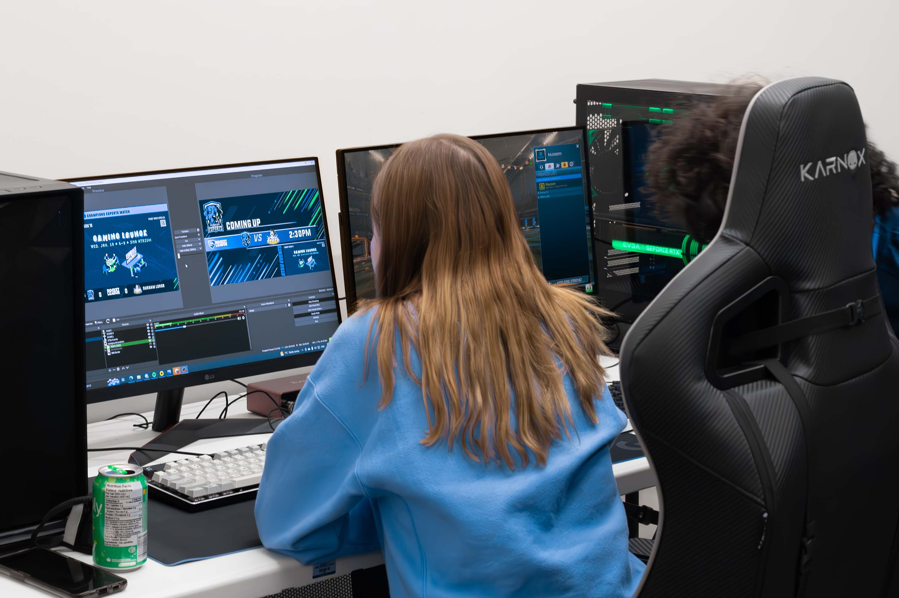
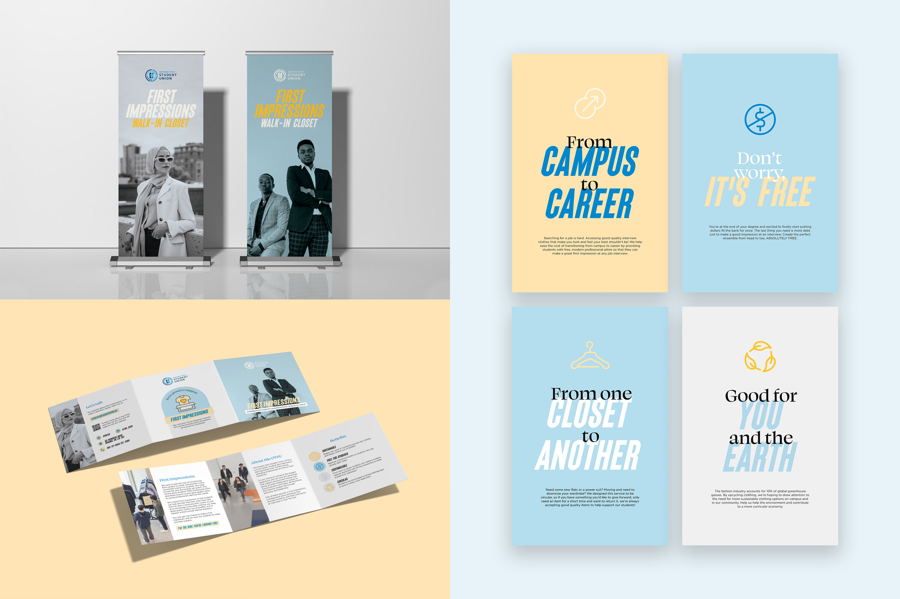
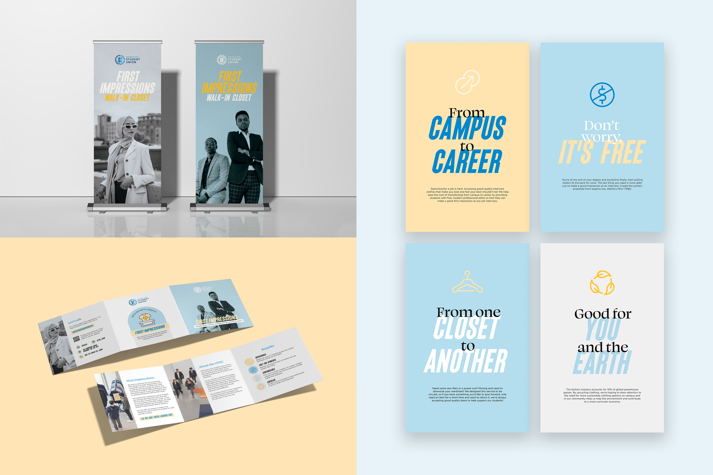

OTSU Events & Initiatives
Ontario Tech Student Union, 2021–2022
The Ontario Tech Student Union (OTSU) is a student-led organization dedicated to enhancing the student experience at Ontario Tech university. The nature of a student union brings new student leadership, who are elected by their peers, on a yearly basis — each with their own priorities and objectives for the year.
The student executives work closely with full-time staff, such as myself, to help bring these initiatives to life. My role in this process was conceiving the brand and direction for these initiatives, from concept to completion.
This work was created under the direction to highlight the event/initiative over the OTSU’s main corporate brand. Each initiative has been uniquely branded to cater to the differing needs of the students who would be interested in each service.

The Studio
The Studio is a creative space supplied with professional, industry-standard tools to help students create polished digital content and media, with a focus on podcasting and audio equipment and photography. While not yet launched, the Studio is currently being used as the broadcasting room for OTSU Esports matches.

 

Cultural Links
Cultural Links was a joint initiative between the OTSU and Ontario Tech University’s International Office that aimed to connect students of diverse backgrounds on campus to cultivate and create community and a deeper understanding of global cultures. The deliverables were a custom logo and promotional material for social media.
First Impressions Walk-in Closet
The OTSU offers students free second-hand professional business attire through a service called First Impressions. The First Impressions Walk-in Closet was an event created to bring awareness to the service, and make it more accessible to students.
Circular fashion, sustainability, and the offering of chic, stylish clothing were key points that needed to be put at the forefront of the campaign. Marketing materials heavily focus on young, modern interpretations of businesswear to make it more appealing to students.
A call for donations brochure was created and sent out to local organizations in the Durham Region, which successfully brought in donations from the Office of the Mayor in Whitby and Oshawa, and through TD Bank’s community partnership program.
 

Period Project
The Period Project was a long-standing initiative by three years of OTSU executive teams to address period poverty on campus. The OTSU was able to install 19 AuntFlow dispensers across campus and provide free menstrual products to those who need it.
With a large percentage of Ontario Tech students coming from cultural backgrounds where menstruation is a taboo topic, the goal for the Period Project was to desensitize and normalize periods and period products. As a result, branding was discrete and neutral, avoiding hyper-feminine colours and imagery.
The Period Project expanded to include other initiatives such as the Period Bank, which consists of monthly take-home period kits and the Period Drive, a call to the community for donations of menstrual products.

Makers Market
The Makers Market is an annual 3-day event that began in 2021 to offer an opportunity for students with businesses and side hustles to table and sell their goods for free. Situated at the start of the holiday season, the Makers Market is marketed as an opportunity to find unique, handmade holiday gifts while supporting local students and small businesses.